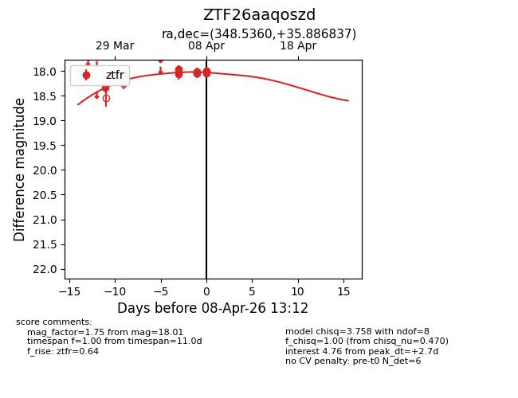
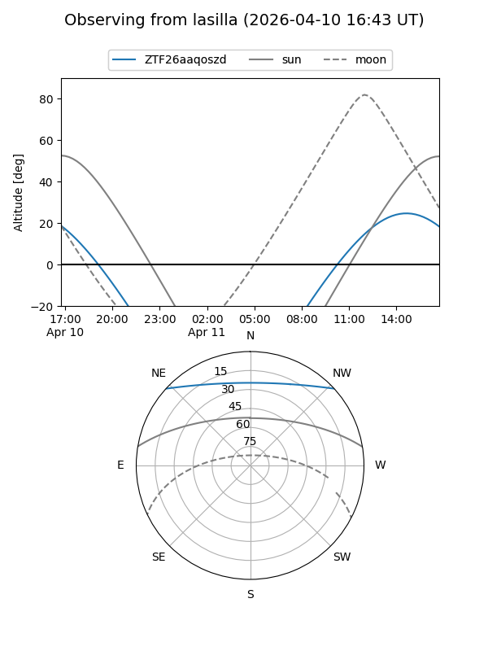
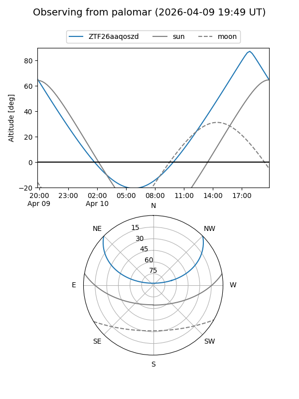
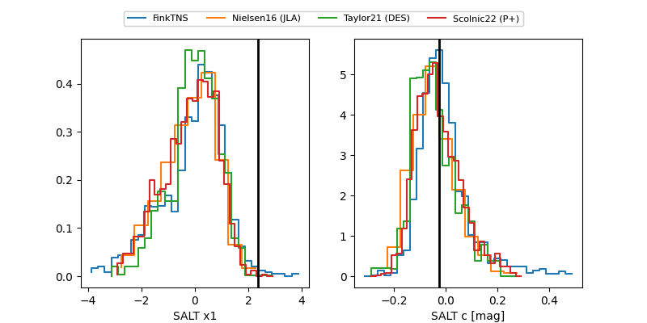

ZTF26aaqoszd
Target ZTF26aaqoszd at 2026-04-08 13:17
Aliases and brokers:
FINK: link
Lasair: link
ALeRCE: link
alt names
ZTF26aaqoszd (ztf,fink_ztf)
Coordinates:
equatorial (ra, dec) = 348.5360,+35.88684
equatorial (HMS+DMS) = 23:14:08.65,+35:53:12.61
galactic (l, b) = (101.6869,-22.93906)
Flags:
Photometry:
last ztfr=18.01
12 ztfr detections
Lightcurve

Visibility


Additional plots
